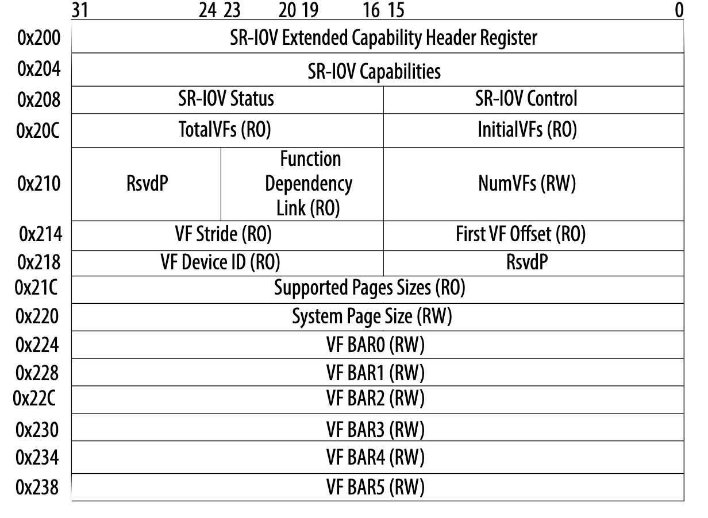

序言
sriov的技术大家基本上都能耳熟能详了，但是大多也只停留在spec层面或者说知道sriov如何使能上。这篇文章主要想通过qemu侧对sirov后端相关模拟的解析来让大家对sriov有一个更加深入的理解。后续的行文主要分为以下两个方面 - os侧 sriov相关使能解析 - qemu侧对sriov模拟
OS侧sriov 使能
os在设备扫描过程中会对设备的相关capability进行一些初始化的工作，具体函数见pci_init_capabilities。其中会调用pci_iov_init 对设备sriov feature做一些初始化的工作，具体逻辑如下
int pci_iov_init(struct pci_dev *dev)
{
int pos;
if (!pci_is_pcie(dev))
return -ENODEV;
pos = pci_find_ext_capability(dev, PCI_EXT_CAP_ID_SRIOV);
if (pos)
return sriov_init(dev, pos);
return -ENODEV;
}
首先会判断是否是一个pcie设备，如果是pcie设备则接着看该pcie设备是否有sriov功能(是否有这个功能主要是通过其extend cap是否有SRIOV CAP ID 来确定的)。如果有sriov功能则对其进行相关的初始化工作，具体的实现在sriov_init 当中。为了让大家更好的理解这个函数当中的相关逻辑，我们先看一下SRIOV extended cap的结构

看完之后，我们来细分一下这个函数的实现
- 读取sriov control的值，如果读取的值显示该设备的sriov已经使能则disable it，实现方式为往PCI_SRIOV_CTRL 写0
- 然后通过pci_ari_enabled(dev->bus) 判断设备所挂在的bus是否enable 了ari feature，如果enable了则需要将sriov control的ARI位了要置上。将这里要重点讲一下ari，它的全称为Alternative Routing-ID Interpretation，那么中文也可译为可替代的route id即可以把传统的routing id 机制替换掉。先来说一下route id，在pcie 链路上，tlp包常用的路由方式有两种。一种是基于bus、device、function组在的一个16 bit的id也即routing id，还有一种就是基于mmio或者pio地址进行路由的方式。再回到ARI上，之所以引入这种机制原因在于传统的routing id当中function只有3bit最多支持8个vf，很明显是无法满足实际的应用场景的，因此ARI将device number(5 bits) 合并到了Function number当中，这样routing id就变成了8-bit Bus Number + 8-bit Function Number的格式，最多支持的Bus数量不变，支持的Function数量增大到256个。注意，除了pf设备本身需要enable ARI之外，其所在的root port或者pcie switch 都需要enable ARI。
- 紧接着分别在 sriov extend cap的PCI_SRIOV_TOTAL_VF 、PCI_SRIOV_SUP_PGSIZE等位置读取vf的总数量以及设备所能支持的用来映射bar空间的page 大小。这里讲一下PCI_SRIOV_SUP_PGSIZE 工作原理，它总共有32bits，假设它的第n位置上则表示其支持的页大小为2的n+12次方。目前支持的页大小有4k、8k、64k、256k、1M、4M，因此一般情况下PCI_SRIOV_SUP_PGSIZE 位置处写入的值为0x553。
- 获取系统支持的页的大小，并将其写到sriov extend capbility的PCI_SRIOV_SYS_PGSIZE 处。
- 根据VF bar size来计算该PF所需要total resource(mmio 大小)，其计算公式为VF_bar_size * total_vf并将其存储在dev->resource[PCI_IOV_RESOURCES ~ PCI_IOV_RESOURCE_END] 当中。
for (i = 0; i < PCI_SRIOV_NUM_BARS; i++) {
res = &dev->resource[i + PCI_IOV_RESOURCES];
/*
* If it is already FIXED, don't change it, something
* (perhaps EA or header fixups) wants it this way.
*/
if (res->flags & IORESOURCE_PCI_FIXED)
bar64 = (res->flags & IORESOURCE_MEM_64) ? 1 : 0;
else
//获取VF bar0 ~ bar5 size
bar64 = __pci_read_base(dev, pci_bar_unknown, res,
pos + PCI_SRIOV_BAR + i * 4);
if (!res->flags)
continue;
if (resource_size(res) & (PAGE_SIZE - 1)) {
rc = -EIO;
goto failed;
}
iov->barsz[i] = resource_size(res);
// 更新 resource range
res->end = res->start + resource_size(res) * total - 1;
pci_info(dev, "VF(n) BAR%d space: %pR (contains BAR%d for %d VFs)\n",
i, res, i, total);
i += bar64;
nres++;
}
那么pf的每个vf bar 的mmio 空间都是从相应的 PCI_IOV_RESOURCE ~ PCI_IOV_RESOURCE_END resouce里面来分配，具体的vf mmio 计算公式如下
<VF BAR start> + <VF number> * <BAR sz> + <offset>
- 从
PCI_SRIOV_VF_DID处读取vf device_id，然后通过compute_max_vf_buses来计算vf所需要使用的bus num，然后在pcibios_assign_all_buses里面需要将这些bus num reserve出来。具体的计算逻辑大家可以看一下相关函数实现也比较简单，这里我就不详述了。
上面分析完了pcie设备sriov的相关初始化，下面我们来看一下如何将一个PF的VF分配出来。通常我们需要在os侧手动触发如下的动作
echon $num > /sys/bus/pci/devices/$bdf/sriov_numvfs
而上面这个动作最终trigger执行的函数为sriov_numvfs_store ，这个函数最终要执行的函数为
pdev->driver->sriov_configure(pdev, num_vfs);
也即这个PF 所属driver当中注册的sriov_configure函数。一般支持sriov的设备driver当中都会注册相应的sriov_configure callback函数，比如virtio_pci_sriov_configure，下面我们就以它为例来分析一下这个callback函数。
- 先判断这个dev的status是不是ok的即VIRTIO_CONFIG_S_DRIVER_OK
- 先再确认一下是否支持sriov即VIRTIO_F_SR_IOV 位是否置上。
- pci_vfs_assigned 判断vf是否已经assigned 给了guest。
- 如果要enable的num_vfs不为0则调用pci_enable_sriov 来进行vf的使能，最终调用到sriov_enable 函数。
接下来我们来分析一下这个核心函数的具体实现逻辑：
- 在 PCI_SRIOV_INITIAL_VF 处读取initial vf 数量(一般这个值是等total vf的)，如果这个值跟total vfs不对等则返回错误
- 接下来判断用户要enable的vf数量是否大于total vfs，判断设备的PCI_IOV_RESOURCES 的数量是否正确，判断vf bus 最大值是否超过其所属bus的bus_res.end也即最大值一般为0xff。
- 如果上面的检查都通过了则开始enable resource即往pci_command处写PCI_COMMAND_IO 或者PCI_COMMAND_MEMORY 告诉pci设备需要开始响应后面的相关IO操作。
- 接着通过将sriov control 的PCI_SRIOV_CTRL_VFE 和 PCI_SRIOV_CTRL_MSE 置上通知后端使能vf相关的数据面。
- 最后通过一个loop来对添加virtfn，具体如下
for (i = 0; i < initial; i++) {
rc = pci_iov_add_virtfn(dev, i);
if (rc)
goto failed;
}
接下来我们分析一下 pci_iov_add_virtfn 的具体实现，通过这个函数我来看一下vf最终的probe流程。
virtfn_add_bus计算VF的bus num，以PF 的bus为parent寻找VF的bus，如果找不到则需要重新创建一个。VF的bus num计算公式如下
PF->bus->number + ((PF->devfn + PF->sriov->offset +
PF->sriov->stride * vf_id) >> 8);
正常情况下 VF和PF应该是在同一个bus上。
pci_alloc_dev为VF创建pci_dev结构，同时计算VF的devfn。具体的计算公式如下
(PF->devfn + PF->sriov->offset +
PF->sriov->stride * vf_id) & 0xff
pci_setup_device初始化设备相关的信息，比如bar大小等。紧接着为vf分配 bar mmio空间，具体逻辑如下
for (i = 0; i < PCI_SRIOV_NUM_BARS; i++) {
res = &dev->resource[i + PCI_IOV_RESOURCES];
if (!res->parent)
continue;
virtfn->resource[i].name = pci_name(virtfn);
virtfn->resource[i].flags = res->flags;
//get VF bar的大小
size = pci_iov_resource_size(dev, i + PCI_IOV_RESOURCES);
//通过VF id来计算相关的res offset
virtfn->resource[i].start = res->start + size * id;
virtfn->resource[i].end = virtfn->resource[i].start + size - 1;
rc = request_resource(res, &virtfn->resource[i]);
BUG_ON(rc);
}
从上面的逻辑可以看出，一个VF的所有的bar mmio resource都是从这个PF的PCI_IOV_RESOURCE 里面分配的。
- 接着就是将vf跟bus绑定，然后可以probe对应的驱动了。具体逻辑可以见
pci_device_add和pci_bus_add_device这里就不赘述了。
qemu侧模拟
qemu 最新主干上已经合入了sriov的相关模拟，patch来自oracle的一位兄弟，说实话这个patch顶多也就能玩玩，缺的东西还比较多。这里我们就结合这个patch将就着看一下吧，从大的方面这个patch的功能分为两个方面：一方面是PF设备sriov cap和vf bar的初始化，另一方面是vf使能过程中后端相对应的处理比如vf 设备的拉起等。代码在hw/pci/pcie_sriov.c 文件当中，我们先来看pf sriov 相关的初始工作，涉及到的函数主要有pcie_sriov_pf_init 和 pcie_sriov_pf_init_vf_bar。先来看一下pf_init这个函数具体都做了哪些工作
-
通过
pcie_add_capability为PF添加PCI_EXT_CAP_ID_SRIOV，表明该设备支持sriov功能。 -
初始化
PCI_SRIOV_VF_OFFSET、PCI_SRIOV_VF_STRIDE、PCI_SRIOV_SUP_PGSIZE、PCI_SRIOV_SYS_PGSIZE等 -
初始化
PCI_SRIOV_VF_DID、PCI_SRIOV_INITIAL_VF、PCI_SRIOV_TOTAL_VF、PCI_SRIOV_NUM_VF，并将sriov control设置为PCI_SRIOV_CTRL_VFE | PCI_SRIOV_CTRL_MSE | PCI_SRIOV_CTRL_ARI。
从上面的分析可以看出该函数所实现的基本上都是os侧sriov init时需要做到的一些重要信息。接下来我们看一下vf bar的相关初始化，实现在pcie_sriov_pf_init_vf_bar 函数，具体实现如下：
void pcie_sriov_pf_init_vf_bar(PCIDevice *dev, int region_num,
uint8_t type, dma_addr_t size)
{
uint32_t addr;
uint64_t wmask;
uint16_t sriov_cap = dev->exp.sriov_cap;
assert(sriov_cap > 0);
assert(region_num >= 0);
assert(region_num < PCI_NUM_REGIONS);
assert(region_num != PCI_ROM_SLOT);
wmask = ~(size - 1);
// region_num 就是bar id，获取具体的bar 地址
addr = sriov_cap + PCI_SRIOV_BAR + region_num * 4;
pci_set_long(dev->config + addr, type);
//在wmask里面设置bar，后续os侧计算bar大小时候会用到
if (!(type & PCI_BASE_ADDRESS_SPACE_IO) &&
type & PCI_BASE_ADDRESS_MEM_TYPE_64) {
pci_set_quad(dev->wmask + addr, wmask);
pci_set_quad(dev->cmask + addr, ~0ULL);
} else {
pci_set_long(dev->wmask + addr, wmask & 0xffffffff);
pci_set_long(dev->cmask + addr, 0xffffffff);
}
dev->exp.sriov_pf.vf_bar_type[region_num] = type;
}
上面的逻辑实现了vf bar的初始化，但是有些地方还需要完善一下。如上面分析，一个PF的所有的VF bar resource(比如bar0) 是在由PF维护的一个大的resource 空间(其大小vf_bar_size * total)内来分配的。因此这个函数可以这样优化一下(只列出需要增加的代码)
//在sriov_pf当中定义一个vf_ioregions
PCIIORegion vf_ioregions[PCI_SRIOV_NUM_BARS]；
//在pf_init_vf_bar函数当中增加以下逻辑
PCIIORegion *r = dev->exp.sriov_pf.vf_regions + region_num;
......
r->addr = PCI_BAR_UNMAPPED;
r->size = dev->exp.sriov_pf.total_vfs * size;
r->type = type;
r->address_space = pci_get_bus(dev)->address_space_mem;
char vf_bar_name[8];
r->memory = g_malloc0(sizeof(MemoryRegion));
g_snprintf(vf_bar_name, sizeof(vf_bar_name), "vf_bar%d", region_num);
memory_region_init(r->memory,OBJECT(dev) vf_bar_name, r->size);
// pf 初始化的时候段mmio空间可以先不使能，因为不确定用户是否会打开vf功能。
memory_region_set_enabled(r->memory, false);
这两个函数都是在具体设备realize 函数当中去调用。上面我们介绍完了pf 的sriov feature的初始化，下面我们来看一下sriov vf 使能过程当中qemu这一端的相关action。os侧驱动通过将sriov control 的PCI_SRIOV_CTRL_VFE 和 PCI_SRIOV_CTRL_MSE 置上来告知qemu这一侧要开始拉起vf，具体实现是在 pcie_sriov_config_write 函数
void pcie_sriov_config_write(PCIDevice *dev, uint32_t address,
uint32_t val, int len)
{
uint32_t off;
uint16_t sriov_cap = dev->exp.sriov_cap;
if (!sriov_cap || address < sriov_cap) {
return;
}
off = address - sriov_cap;
if (off >= PCI_EXT_CAP_SRIOV_SIZEOF) {
return;
}
trace_sriov_config_write(dev->name, PCI_SLOT(dev->devfn),
PCI_FUNC(dev->devfn), off, val, len);
if (range_covers_byte(off, len, PCI_SRIOV_CTRL)) {
if (dev->exp.sriov_pf.num_vfs) {
if (!(val & PCI_SRIOV_CTRL_VFE)) {
unregister_vfs(dev);
}
} else {
if (val & PCI_SRIOV_CTRL_VFE) {
//判断是enable vf的 control
register_vfs(dev);
}
}
}
}
上面这段代码有点缺陷即如果是 PCI_SRIOV_CTRL_MSE 则需要enable 上面额外添加的vf_ioregions，下面写段伪代码
int j;
for (j = 0; j < PCI_SRIOV_NUM_BARS ;j ++)
PCIIORegion *r = pf->exp.sriov_pf.vf_ioregions + j;
if (r->memory)
memory_region_set_enabled(r->memory, true);
接着来看 register_vfs ，首先获取vf_offset、vf_stride和前端要enable的num_vfs。前两个主要是用来计算vf的devfn，具体计算公式见上面。然后通过一个loop 调用register_vf 来分别对每个vf进行使能，具体逻辑如下
static PCIDevice *register_vf(PCIDevice *pf, int devfn, const char *name,
uint16_t vf_num)
{
PCIDevice *dev = pci_new(devfn, name);
dev->exp.sriov_vf.pf = pf;
dev->exp.sriov_vf.vf_number = vf_num;
PCIBus *bus = pci_get_bus(pf);
Error *local_err = NULL;
//vf设备初始化
qdev_realize(&dev->qdev, &bus->qbus, &local_err);
if (local_err) {
error_report_err(local_err);
return NULL;
}
/* set vid/did according to sr/iov spec - they are not used */
pci_config_set_vendor_id(dev->config, 0xffff);
pci_config_set_device_id(dev->config, 0xffff);
return dev;
}
上面的逻辑核心就在使用qdev_realize 对vf设备进行初始化，具体的流程可以参考一下qemu QOM解析这篇文章。在vf设备初始化过程中有一个地方需要注意一下，就是通常pf在初始化的时候会调用pci_register_bar ，而vf在初始化的时候需要调用pcie_sriov_vf_register_bar ，具体的实现如下
void pcie_sriov_vf_register_bar(PCIDevice *dev, int region_num,
MemoryRegion *memory)
{
PCIIORegion *r;
PCIBus *bus = pci_get_bus(dev);
uint8_t type;
pcibus_t size = memory_region_size(memory);
assert(pci_is_vf(dev)); /* PFs must use pci_register_bar */
assert(region_num >= 0);
assert(region_num < PCI_NUM_REGIONS);
type = dev->exp.sriov_vf.pf->exp.sriov_pf.vf_bar_type[region_num];
if (!is_power_of_2(size)) {
error_report("%s: PCI region size must be a power"
" of two - type=0x%x, size=0x%"FMT_PCIBUS,
__func__, type, size);
exit(1);
}
r = &dev->io_regions[region_num];
r->memory = memory;
r->address_space =
type & PCI_BASE_ADDRESS_SPACE_IO
? bus->address_space_io
: bus->address_space_mem;
r->size = size;
r->type = type;
r->addr = pci_bar_address(dev, region_num, r->type, r->size);
if (r->addr != PCI_BAR_UNMAPPED) {
memory_region_add_subregion_overlap(r->address_space,
r->addr, r->memory, 1);
}
}
因为上面的相关逻辑已经进行了一些修改，所以这边也需要进行相关的修改，修改完之后的这个函数如下
void pcie_sriov_vf_register_bar(PCIDevice *dev, int region_num,
MemoryRegion *memory)
{
PCIIORegion *r;
PCIBus *bus = pci_get_bus(dev);
uint8_t type;
uint16_t vf_num;
pcibus_t size = memory_region_size(memory);
assert(pci_is_vf(dev)); /* PFs must use pci_register_bar */
assert(region_num >= 0);
assert(region_num < PCI_NUM_REGIONS);
type = dev->exp.sriov_vf.pf->exp.sriov_pf.vf_bar_type[region_num];
vf_num = dev->exp.sriov_vf.vf_numbe;
PCIIORegion *region = dev->exp.sriov_pf.vf_regions + region_num;
/*get the bar size */
bar_size = region->size / dev->exp.sriov_pf.total_vfs;
if (!is_power_of_2(size)) {
error_report("%s: PCI region size must be a power"
" of two - type=0x%x, size=0x%"FMT_PCIBUS,
__func__, type, size);
exit(1);
}
r = &dev->io_regions[region_num];
r->memory = memory;
//r->address_space =
// type & PCI_BASE_ADDRESS_SPACE_IO
// ? bus->address_space_io
// : bus->address_space_mem;
r->size = size;
r->type = type;
/*vf mmio split from pf vf_iorgions*/
r->address_stapce = region->memory;
//r->addr = pci_bar_address(dev, region_num, r->type, r->size);
//if (r->addr != PCI_BAR_UNMAPPED) {
// memory_region_add_subregion_overlap(r->address_space,
//r->addr, r->memory, 1);
//}
r->addr = PCI_BAR_UNMAPPED;
memory_region_add_subregion(r->address_space,
bar_size * vf_number,
r->memory);
memory_region_set_enabled(r->memory, true);
}
大家可以对比一下这个函数在修改前后的对比。另外，从前端的实现里面可以看到设备初始化会对 vf bar 的相关region resource进行更新， 所以patch里面应该在config write流程里面再加上相应的vf_ioregions更新，这里就不详述了大家可以思考一下。
总结
上面了花了一些篇幅对sriov的前后端进行了一些分析，希望能对各位看官有些帮助。正如前面所说sriov不是一项新的技术，之前在相关文章也介绍过它的下一代siov。但不可否认sriov依然是截止目前为止所有高性能io虚拟化技术里面使用最简单、最稳定的，所以我觉得大家还是有必要弄清楚他的相关原理。